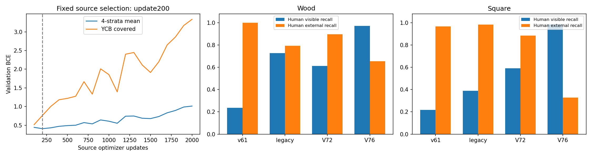

보이는 점의 누락은 크게 줄었지만, 외부 가림을 보인다고 판단하는 오류가 증가했습니다. 현재 단계는 가림 판별 문제의 해결로 채택할 수 없습니다.
현재 평가 223장은 직접 촬영했고 KU Leuven 자료와 무관하다는 사용자 확인을 기록했습니다. 이 자료의 학습·문턱 선택 사용은 0회이며, PnP는 변경하지 않았습니다. 공개·합성 자료에서 고른 200-step 체크포인트와 문턱 0.5를 고정한 뒤 평가 1회를 실행했습니다. 비교 결과를 보고 체크포인트나 문턱을 바꾸지 않았습니다.
D=직접 보임, E=외부 가림. 각 배열은 [보임, 없음/비가시, 보류]입니다. 새 head의 음성은 외부 가림 원인을 판별했다는 뜻이 아닙니다.
| 모델 | D → [V,A,U] | E → [V,A,U] | 보임 precision | 보임 recall | 외부 가림 recall | 보류율 |
|---|---|---|---|---|---|---|
| v61 | [145, 471, 0] | [0, 29, 0] | 100.0% | 23.5% | 100.0% | 0.0% |
| 기존 가림 모델 | [448, 65, 103] | [2, 23, 4] | 99.6% | 72.7% | 79.3% | 16.6% |
| V72 이전 head | [377, 239, 0] | [3, 26, 0] | 99.2% | 61.2% | 89.7% | 0.0% |
| V76 새 head | [598, 18, 0] | [10, 19, 0] | 98.4% | 97.1% | 65.5% | 0.0% |
| 모델 | D → [V,A,U] | E → [V,A,U] | 보임 precision | 보임 recall | 외부 가림 recall | 보류율 |
|---|---|---|---|---|---|---|
| v61 | [115, 416, 0] | [2, 59, 0] | 98.3% | 21.7% | 96.7% | 0.0% |
| 기존 가림 모델 | [207, 254, 70] | [1, 60, 0] | 99.5% | 39.0% | 98.4% | 11.8% |
| V72 이전 head | [314, 217, 0] | [7, 54, 0] | 97.8% | 59.1% | 88.5% | 0.0% |
| V76 새 head | [523, 8, 0] | [41, 20, 0] | 92.7% | 98.5% | 32.8% | 0.0% |
목재: D616/E29, 105장. 정사각형: D531/E61, paired 117장(기존 대응 미확정 1장 제외). 전체 출력은 223장·1,784점 모두 보존했습니다. 새 head의 입력 유효 1,739점, 입력 불명/무효 45점(2.52%)은 UNKNOWN입니다. 위 유효 paired 집단에서 보류율 0%인 이유는 confidence U 판별기를 학습하지 않았기 때문이며, 확신도 보증이 아닙니다. 기존 가림 모델은 과거 학습·CAL·보류 이력이 달라 학습 조건이 같지는 않습니다.
| 자료 | 모델 | 보임 / D | 보임 recall | 보류 |
|---|---|---|---|---|
| 목재 | v61 | 42/153 | 27.5% | 0 |
| 목재 | 기존 가림 모델 | 116/153 | 75.8% | 26 |
| 목재 | V76 새 head | 152/153 | 99.3% | 0 |
| 목재 | V72 이전 head | 108/153 | 70.6% | 0 |
| 정사각형 | v61 | 43/223 | 19.3% | 0 |
| 정사각형 | 기존 가림 모델 | 89/223 | 39.9% | 37 |
| 정사각형 | V76 새 head | 221/223 | 99.1% | 0 |
| 정사각형 | V72 이전 head | 152/223 | 68.2% | 0 |
목재153점·정사각형223점은 manual_click 참조만 사용합니다. 목재의 더 큰 stored-coordinate ≤3px 집단에는 비수동 좌표가 섞이므로 이 표와 합치지 않았습니다. 좌표 오차는 기존 참조와의 차이이며, 실제 pixel GT나 가림 원인의 증명은 아닙니다.
| 자료 | 모델 | D → [V,A,U] | S → [V,A,U] | D recall | S recall |
|---|---|---|---|---|---|
| 목재 | v61 | [154, 472, 0] | [115, 21, 0] | 24.6% | 15.4% |
| 목재 | 기존 가림 모델 | [448, 75, 103] | [13, 118, 5] | 71.6% | 86.8% |
| 목재 | V76 새 head | [608, 18, 0] | [120, 16, 0] | 97.1% | 11.8% |
| 목재 | V76 + 저장 자기 가림 기하 | [598, 28, 0] | [20, 116, 0] | 95.5% | 85.3% |
| 목재 | V72 이전 head | [379, 247, 0] | [69, 67, 0] | 60.5% | 49.3% |
| 목재 | V72 + 저장 자기 가림 기하 | [377, 249, 0] | [12, 124, 0] | 60.2% | 91.2% |
목재 same-slot D626/S136. 정사각형에는 대응되는 확정 S 집단이 없습니다. 새 binary head 자체는 자기 가림을 학습한 모델이 아닙니다. 저장된 초기 cuboid 기하만 별도로 적용하면 목재 S136개 중 116개를 비가시로 분류하지만 D10개를 추가로 잃습니다. 새 자세 추정이나 PnP는 실행하지 않았습니다.
초기 query 중심 3×3 특징과 전체 local crop, target context, 8개 query 배치를 읽는 작은 head(41,237 파라미터)를 학습했습니다. V75 encoder/fusion을 재사용하고 새 binary 출력을 초기화했습니다. 이전 attention 위치 추정과 위치 auxiliary는 제거했습니다. reference-local support는 중심 한 픽셀의 존재나 사람 D/E/S와 다른 약한 교사 라벨입니다.
합성 1,003개와 YCB 공개 객체 4,200개(고유 RGB 1,000개), 총 41,624점을 모두 보존했습니다. teacher V17,897/C2,149/U21,578. 실제 loss 허용 TRAIN15,465점·VAL3,643점입니다. U, 입력 무효, 참조점의 crop 이탈은 음성으로 바꾸지 않고 loss0으로 유지했습니다. YCB는 공식 AABB 참조에 합성 TRAIN768개의 초기 좌표 오차 벡터를 적용한 source augmentation입니다. 공개 검증 수치는 실제 팔레트 초기 추론기의 성능이 아닙니다.
| source VAL | N | CM: 행/열 C,V | V precision | V recall | C precision | C recall | 입력 전체 중 평가 허용 |
|---|---|---|---|---|---|---|---|
| SYNTHETIC|val | 1625 | [[162, 11], [30, 1422]] | 99.2% | 97.9% | 84.4% | 93.6% | 1625/1880 |
| YCB_PUBLIC_REAL|val | 2018 | [[173, 114], [574, 1157]] | 91.0% | 66.8% | 23.2% | 60.3% | 2018/6400 |
공개 실사 COVERED precision23.2%·recall60.3%에서 이미 전이 한계가 드러납니다. 200-step 이후 공개 COVERED 검증 손실이 증가하며 과적합합니다. 합성235개 VAL은 기존 반복 검증 자료이며, 84개는 V75 선택에도 사용됐습니다. 새 독립 일반화 시험으로 주장하지 않습니다. 원래 TRAIN/VAL 분할을 유지했습니다.

query 픽셀은 target0인데 주변 참조 support는 VISIBLE인 공개 실사와, query 픽셀은 target1이지만 참조점은 COVERED인 사례가 모두 있습니다. 따라서 작은 좌표 오차에서도 중심 픽셀 라벨과 참조 주변 라벨은 달라질 수 있습니다. 이 목표 차이는 실제 존재하지만, 목표를 바꾼 것만으로 실사 가림 판별이 해결되지는 않았습니다.
고정 source 5사례: 원본 crop·M0/M4·q/r 비교

동일한 기존 평가 6사례: v61·V72·V76 저장 출력

현재 결과는 보이는 점 보존과 외부 가림 검출 사이의 큰 trade-off를 보여줍니다. 새 head를 가림 문제의 해결로 채택하지 않습니다. 다음 진단은 공개 source 검증에서 이미 확인된 COVERED 오분류를 기준으로 진행합니다. query와 참조 위치의 차이, local 전체의 다른 target support, 라벨 strong/fallback 분기를 나눠 확인하며 현재 평가셋으로 새 문턱이나 모델을 선택하지 않습니다.
현재 결과는 40개 지표 행·960개 값을 독립적으로 재계산했고 모두 일치했습니다. 원래 q/L/P3/RGB96과 모든 GT/출력 연결을 확인했습니다. 무효 45점 중 저장 자기 가림 flag가 True인 1점도 음성으로 바뀌지 않도록 보존했습니다.
공개 VAL만 따로 분해해도 큰 좌표 오차가 전부를 설명하지 않습니다. q-r≤3px, STRONG3×3 교사, 참조가 중앙 native cell에 있는 집단의 VISIBLE459점 중 212점을 누락했습니다(recall53.8%). 따라서 라벨 정의 차이와 함께 모델의 실제 공개 실사 전이 실패가 남습니다. 전체 local crop의 다른 support 영향, geometry prior, 외형·객체 식별은 원인 가설이며 아직 인과적으로 확인하지 않았습니다.